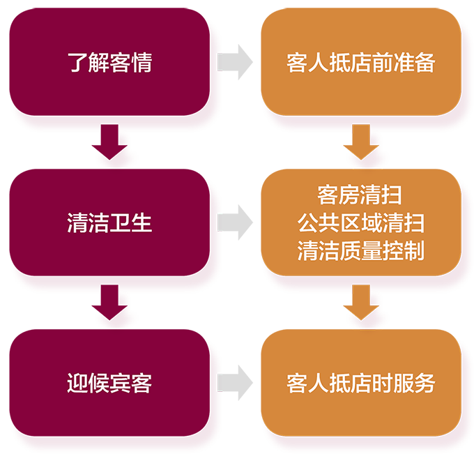
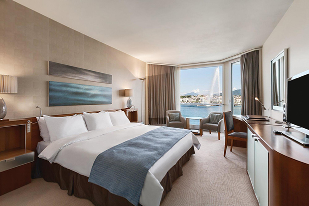
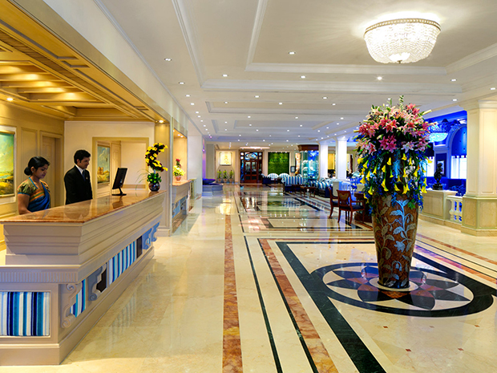
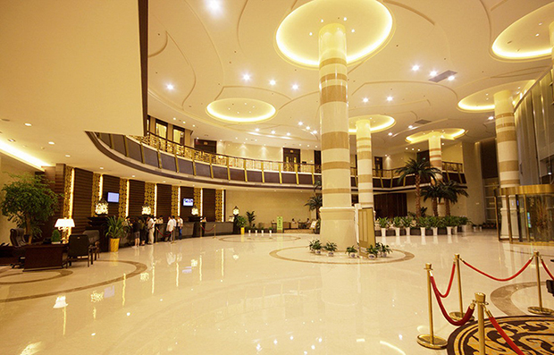
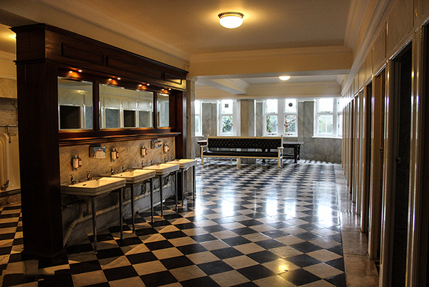
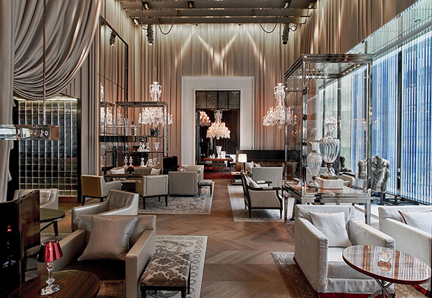
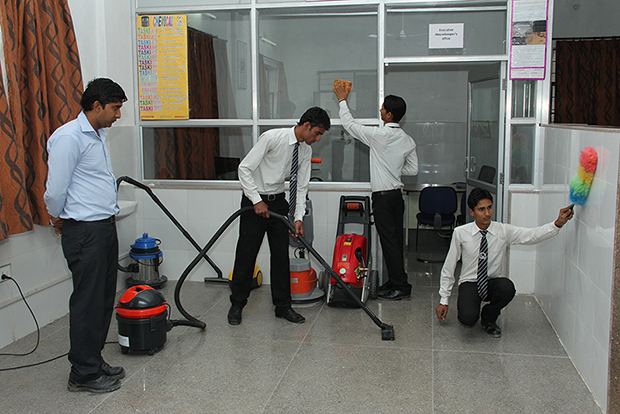
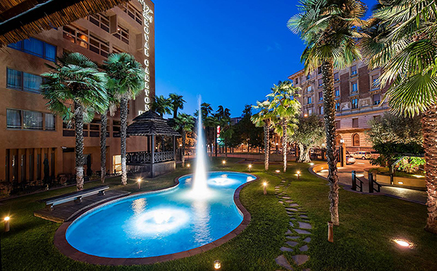

p.3
一、任务目标
案例导入
北京市某高级酒店的客房部，这几天接待一个洽谈会团体，客人非常多，所以服务员清扫客房的任务量很大。某实习生正在一间走客房内做床，他急急忙忙撤下床单，发现褥垫上有块污迹，因为还有很多房间要整理，也顾不上换干净的褥垫，就将干净的床单往上一铺，包好了事。没想到这间房正好是酒店接待 VIP 的特用房，客房部经理亲自来检查房间，发现褥垫上有污渍，十分生气，他说：“不管是什么样的客人入住这间房，若发现床单下面铺着有污渍的褥垫，都会影响客人的情绪，休息也不会安心，影响舒适与安全感，很可能使其在北京的整个旅程都不愉快，甚至拒付房费。失去客人，酒店还要蒙受损失，后果是非常严重的。”
p.4
二、任务流程
对酒店各部分进行清洁保养工作，为客人提供干净、整洁、舒适的家外之家。

图 2 客房部迎客服务工作流程图
p.5
三、清洁质量控制

清洁质量控制
案例导入
一次，客房领班查房时发现 2013 房卫生间的防滑垫发黑起霉点，当即通知当班服务员小李将防滑垫取出进行清洁消毒，并在“工作跟进表”登记后交台班跟进。下午下班前领班却没有再到房间复查。而小李将防滑垫取出到工作间清浸洗后，恰好有电工来房间维修，小李跟进维修直至下班才完成，忘记将防滑垫放回房间。小张接小李的班后，没有认真检查“工作跟进表”中的房态，因此没发现 2013 房无防滑垫。晚上，一位女士入住 2013 房，结果淋浴时跌倒摔伤。客人进行投诉并索赔，理由是：卫生间未按要求放置防滑垫。
p.6
（一）客房计划卫生的内容
计划卫生是指在客房日常清洁卫生的基础上，拟定一个周期性清洁计划，采取定期循环的方式，将客房中平时不易做到或不易做彻底不必每日都做的卫生项目进行彻底的清洁和维护保养，以保证客房的洁净处于良好的状态。
1．计划卫生的分类
（1）单项计划卫生
由于人力的安排，开房率的高低等因素的影响，服务员每天清扫客房时只能有所侧重，也就是服务员在清扫房间的同时，对客房的某一部位进行彻底清扫，经过若干天对不同部位和区域的彻底清扫，完成所有客房的计划卫生工作。
（2）客房周期大清洁
单凭单项的计划卫生较难维持客房的格调，所以应安排对住客房卫生进行周期性、全面、彻底的清洁，以确保客房处于清洁如新的状态，使客房的卫生质量保持和达到较高水平。具体做法是：以一季度为一个工作周期，保证在一周期内对全部客房完成一次周期大清洁。
p.7
（3）季节性大扫除
利用淡季对房间毛毯、床罩、床裙、枕芯、窗帘、软面家具等进行彻底清洗。进行此项工作前，应和前厅部取得联系，以便对某一楼层实行封房。
2．计划卫生的项目
（1）房间部分
房间计划卫生项目一般包括：墙壁除污、清洁出风口、清洗空调网、地毯边角床底等处吸尘、家具后侧除尘、清洗冰箱、翻床垫、地毯清洗及局部除渍、电话消毒、清洁垃圾桶、家具除污、打蜡、鞋篮除尘、洗擦外窗玻璃。
（2）卫生间部分
卫生间计划卫生项目一般有：清洗出风口、抽风机、刷洗马桶及水箱、刷洗浴缸污渍、刷洗面盆、刷洗卫生间四壁、洗刷卫生间地面、电话副机消毒、擦洗卫生间不锈钢制品、大理石台面上蜡、卫生间顶除尘。
以上计划卫生项目，其被污染的速度有快有慢，清洁间隔的时间要求也就各不相同，所以根据实际情况，安排计划卫生的日期，如每周计划卫生，每月计划卫生等并切实加以执行。
3．计划卫生的实施与控制
（1）准备好清洁器具和清洁剂
在做计划卫生之前，应根据具体工作内容准备好清洁工具及各种清洁剂等，如：玻璃刮、玻璃水、地毯水、万能清洁剂、家私蜡、牙膏、牙刷、快洁布等。
p.8
（2）做好计划卫生的安排和检查记录
①安排好计划卫生工作，将客房的周期性清洁卫生计划表贴在楼层工作间，领班每天在服务员清扫日报表上写上当日要做的计划卫生项目，以便安排、督促服务员在完成日常清扫工作的同时，完成当天的计划卫生任务。
②做好检查记录工作：领班根据楼层计划安排表进行监督、检查。客房中心根据计划卫生项目的完成情况，绘制成计划卫生一览表，显示各楼层计划卫生完成状况，以引起服务员和管理人员的重视。
（3）注意安全
客房的计划卫生中，有不少是高空作业，如清理通风口、玻璃窗、天花板等，因此在清扫高处物体的卫生时，应使用凳子，特别是清洁玻璃窗时，注意不要爬到窗台上站或坐，以防止事故发生。
（4）单项计划卫生安排表及周期大清洁的步骤与方法
4．消毒工作（客房消毒的要求）
（1）客房消毒的要求
每天进行通风换气，日光照射，遇到特殊情况如住客患病应及时进行消毒。
p.9
（2）客房卫生间
卫生间的设备用具易于沾染病菌，因此卫生间必须每天彻底清扫，定期消毒，保持整洁，卫生间洁具每换一客，必须进行严格消毒。
（3）客房杯具
客房内用过需要更换的杯具应每日一换，楼层消毒间进行严格的洗涤消毒，楼层配有消毒柜和用具。
（4）其他客用品
（5）客房工作人员
②清扫客房时，双手应尽量禁摸物品，尤其杯具等经过严格消毒的物品。
（6）清洁用具
（二）客房的逐级检查制度
客房的逐级检查制度主要是指对客房的清洁卫生质量检查实行服务员自查、领班全面检查和管理人员抽查的逐级检查制度。
p.10
1．服务员自查
服务员每整理完一间客房，应对客房的清洁卫生状况、物品的布置和设备的完好等做自我检查。通过自查，以提高客房的合格率，同时也可以减轻领班查房的工作量。
2．领班全面检查
服务员整理好客房并自查完毕后，由楼层领班对所负责区域内的每间客房进行全面检查，并保证质量合格。通常，领班每天检查房间的数量为 100%，即对其所负责的全部房间进行普查。领班查房时如发现问题，要及时记录并加以解决。
3．管理人员检查
管理人员抽查是指主管抽查和经理抽查。主管抽查客房的数量，一般为领班查房数的 10% 以上。主管检查的重点是每间 VIP 房，抽查长住房、OK 房、住客房和计划卫生的大清扫房。还要检查维修房，促使其尽快投入使用。客房部经理每天要拿出一定时间到楼层巡视，抽查客房的清洁卫生质量，特别要注意对 VIP 房的检查。
p.11
四、公共区域的清洁卫生

公共区域的清洁卫生
p.12
案例导入
某杂志社几位采编人员一连三天躲在饭店的房间里整理采访来的材料。忽然，门铃响起，开门一看，正好是他们翘首等待几天的同济大学某教授。他们发现教授手中的雨伞外有一个细狭的塑料套子，不禁赞扬教授的细心了。要是没有这个套子的话，大酒店豪华的地毯早就被湿透的雨伞上的水滴弄湿了。“哪里，哪里，”教授一边坐下一边说，“我哪里想到这一层，是酒店大堂服务员给每个进店拿着雨伞的客人套上的。既方便了客人，又保护了酒店地毯，保持了酒店环境整洁。”
分析提示：小小的雨伞套，折射出了酒店对于环境的重视程度。
1．与客房清洁卫生相比，公共区域的清洁卫生有何不同？
2．公共区域清洁卫生的业务范围包括哪些？各部位该如何清洁？
（一）公共区域的范围
客房部除了要搞好客房卫生外，还要负责所有公共区域的清洁卫生，一般让客房部下设的公共区域组完成。所谓（Public Area，PA）是宾客和饭店员工共同享有的活动区域，包括室内和室外，客用部分和员工使用部分。公共区域范围广大，不仅涉及到住店客人，以及用餐、开会、购物、参观游览等非住店客人，而且还是所有员工工作环境的重要组成部分。所以做好公共区域的清洁卫生工作意义重大。
p.13
（二）公共区域清洁卫生的特点
1．人员流量大，清洁工作不太方便
公共区域的人员流量非常大，客人活动频繁，这给该区域的清洁保养工作带来不便和困难。为了便于清洁和减少对来往人员的干扰，公共区域的清洁工作尽量都安排在人员活动较少的时间段进行，特别是客用的区域，大量的清洁工作被安排在夜班完成。
2．涉及范围广，造成影响大
公共区域清洁卫生的范围涉及饭店的每一个角落，既包括外围的外墙、花园、前后大门、通道等，也包括室内的大厅、休息室、餐厅、娱乐场所、公共洗手间、电梯，行政办公室、员工休息室、更衣室、餐厅、员工公寓，以及所有的下水道、排水排污管道和垃圾房等。公共区域的清洁卫生的状况被每一位经过和进入饭店的客人及非客人所感知，所传扬，对树立饭店形象有较大的影响。
3．项目繁杂，专业、技术性强
公共区域清洁卫生工作不仅涉及面很广，而且在不同的地点、针对不同的清洁对象，有不同的清洁标准，不同的清洁方法，使用不同的清洁剂，所以其清洁卫生项目繁杂琐碎。如地面、墙面、天花板、门窗、灯具清洁，公共卫生间的清扫，绿化布置、除虫防害等。各类清洁工作具有各自的专业性和技术性，对工作人员提出了较高的要求。
p.14
（三）公共区域卫生的准备工作
1．安排好清洁保养时间
根据客人活动的时间规律，安排好不同区域的清洁保养时间，原则上不能影响客人的正常活动。如大堂地面清洁维护安排在夜晚。
2．领取工作钥匙和有关的工作表单
3．准备好清洁剂和清洁器具
如高处作业准备梯子，使用前做好检查；清洁地面，准备好吸尘器、洗地毯机、打蜡机、拖把、尘推等；清洁玻璃，准备好清洁剂，玻璃刮、抹布；注意清洁剂的配比或种类选用。
（四）公共区域清洁卫生的主要内容
公共区域卫生涉及饭店前台和后台，室内和室外的广泛区域，主要的几项清洁卫生工作包括以下内容。
1．大堂的清洁
是酒店客人来往最多的地方，是饭店的门面，会给客人留下作用重大的第一印象。因此，大堂的清洁卫生工作尤为重要。
p.15

大堂的清洁
（1）地面清洁
大厅的大理石地面，在客人活动频繁的白天，需不断地进行推尘工作。遇到雨雪天，要在门中放上存伞架，并在大门内外铺上踏垫和小地毯，同时在入口处不停地擦洗地面的泥尘和水迹。每天夜间 12 点以后打薄蜡一次，并用磨光机磨光，使之光亮如镜。大厅内有地毯处每天要吸尘 3～4 次，每周清一次。大堂地面清洁要仔细，不能有任何遗漏点。拖擦过程中应及时取下清洁工具上的灰尘杂物。操作过程应尽量避开客人或客人聚集区。打蜡或水迹未干区应有标示牌，以防客人滑倒。
p.16
（2）门庭清洁
白天对玻璃门窗、门框、指示牌等的浮、指印和污渍进行擦抹，尤其是大门的玻璃应始终保持一尘不染。夜间对门口的标牌、墙面、门窗及台阶进行全面清洁，擦洗，对大门口的庭院进行清扫冲洗等。
（3）家具的清洁
白天勤擦拭休息区的桌椅、服务区的柜台及一些展示性的家具，确保干净无灰尘。及时倾倒并擦净立式烟筒，更换烟缸。更换烟缸时，应先将干净的烟缸盖在脏的上面一起撤下，然后将干净烟缸放上，以免烟灰飘扬洒落。随时注意茶几、台面上的纸屑杂物，一经发现，及进清理。
（4）扶梯、电梯清洁
大堂扶梯、电梯的清洁保养多在夜间进行，白天只作简单清洁维护。主要清洁工作是擦亮扶梯扶手挡杆玻璃护挡，清洁轿厢、更换清洗星期地毯，使扶梯、电梯内外、上下、四周均无灰尘、无指印、无污迹。
（5）不锈钢、铜器清洁上光
不锈钢、铜器等金属装饰物为酒店大厅增添了不少光彩，这些器件每天都要清洁，否则会失去光泽或沾上污迹。擦洗这些器件时注意要使用专门的清洁剂，若用其他的清洁剂会造成对器件的严重损坏。
大堂广告架牌、指示标牌、栏杆、铜扶手及装饰用铜球等，还是大堂清洁保养的主要对象。铜器分为纯铜和镀铜两种，擦拭方法也不同。擦拭纯铜制品时，先用湿布擦去尘土，然后用少许铜油进行擦拭，直到污迹擦净，再用干布擦净铜油，使其表面发光发亮。擦拭后铜制品表面不能留有铜油，以免在使用过程中弄污客人的手或衣物。镀铜制品不能使用铜油擦拭，因为铜油中含有磨砂膏，经过擦磨后会损坏镀铜的表面，不但影响美观，也会减少使用的寿命。
p.17
2．公共洗手间的清洁服务
公共洗手间是客人最挑剔的地方之一，因此饭店必须保证公共洗手间清洁卫生、设备完好，用品齐全。

公共洗手间的清洁服务
公共洗手间的日常清洁服务是：及时做好洗手间的消毒工作，使之干净无异味；按序擦净面盆、水龙头、台面、镜面，并擦亮所有金属镀件；将卫生间的香水、香皂、小方巾、鲜花等摆放整齐，并及时补充更换；拖净地面，擦拭门、窗、隔档及瓷砖墙面；配备好卷筒纸、卫生袋、香皂、衣刷等用品；检查皂液器、自动烘用器等设备的完好状况；热情向客人微笑问好、为客人拉门、递送小毛巾等。
公共洗手间的全面清洗是：洗刷地面及地面打蜡、清除水箱水垢、洗刷墙壁等。为不影响客人使用洗手间，该工作常在夜间进行。
p.18
3．餐厅、酒吧、宴会厅的清洁
餐厅、酒吧和宴会厅是客人饮食场所，卫生要求较高。清洁工作主要是在餐厅营业结束后，做好对地毯的清洁。此外，餐厅、酒吧、宴会厅或其他饮食场所，常会有苍蝇等害虫出现，应随时或定期喷杀虫剂，防止蚊蝇等害虫孽生。

餐厅、酒吧、宴会厅的清洁
p.19
4．后台区域的清洁卫生
员工食堂、浴室、更衣室、服务通道、员工公寓、娱乐室的卫生状况对员工的思想和精神、对酒店服务质量有重要的影响。后台区域的清洁卫生工作有：做好员工食堂、浴室、更衣室的日常消毒、清洁维护；对员工公寓、娱乐室等进行定期清扫等；搞好员工通道等的清洁保养，为全店员工创造良好的生活、工作环境。

后台区域的清洁卫生
p.20
5．绿化布置及清洁养护
绿化布置能给宾客耳目一新、心旷神怡的美好感受。所以饭店在店外的绿化规划和店内的绿化布置上都应有所开拓。当然掌握一般的绿化程序是基础。绿化布置的程序为：客人进出场所的花卉树木按要求造型、摆放；定期调换各种盆景，保持时鲜；接待贵宾或举行盛会时要根据酒店通知进行重点绿化布置；在绿化布置和送达楼面的鲜花摆放时要特别注意客人所忌讳的花卉。

绿化布置及清洁养护
p.21
清洁养护的程序：每天按顺序检查、清洁、养护全部花卉盆景；拣去花盆内的烟蒂杂物，擦净叶面枝杆上的浮灰、保持叶色翠绿，花卉鲜艳；及时清除喷水池内的杂物、定期换水，对水池内的假山、草进行清洁养护；及时修剪、整齐花草；定时给花卉盆景浇水、定期给花草树木喷药灭虫；养护和清洁绿化时，应注意避免操作时溅出的水滴弄脏地面，注意不可影响客人的正常活动。
（三）公共区域清洁卫生的质量控制
公共区域清洁卫生具有涉及面广，工作项目繁琐，人员变动较大等特点，为保证其工作质量，提高工作效率，必须实行相应的控制措施。
1．强调专业化技术
对人手需要量大、专业技术性强、周期性强又较宜固定安排的清洁项目进行外包。如外墙清洁、大堂地面清洁等。对日常清洁维护比较简单和灵活的项目安排酒店员工。
2．划片包干，责任落实到人
由于公共区域卫生工作面积大，工作地点分散，不易集中监督管理；且各类卫生项目的清洁方法和要求不同，很难统一检查评比标准。所以不仅要求每个服务人员具有较高的质量意识和工作自觉性，同时也要做到分类管理，定岗定人定责任。可将服务员划分成若干个小组，如楼道组、花园组等。注意做到无遗漏，不交叉。
p.22
3．制定计划卫生制度
为了保证卫生质量，控制成本和合理调配人力、物力。必须对公共区域某些大的清洁保养工作，采用计划卫生管理的方法，制定计划卫生制度。如墙面、高处玻璃、各种灯具、地毯洗涤、地面打蜡等，不能每天清扫，需要像客房计划卫生一样，制定一份详细、切实可行的计划，循环清洁。清扫项目、间隔时间、人员安排等要在计划中落实，在正常情况下按计划执行。对交通密度大和卫生不易控制的公共场所卫生工作，必要时应统一调配人力，进行定期突击，以确保整个饭店的清新环境。
4．加强现场管理
公共区域管理人员要加强现场巡视，要让问题解决在可能发生或正在发生时，因为一旦清洁卫生遗漏、失误或欠缺已成事实，首先感知的往往是公众。所以公共区域各类清洁项目应有清楚的检查标准和检查制度，以及制作相应的记录表格。管理人员要对清洁卫生状况进行密切监督，定期或不定期的检查和抽查，才能保证公共卫生的质量，才能维护公共区域的形象。
五、客房物品配备
案例导入
入夏正值滨城大连的旅游旺季，某星级酒店多年来以服务热情周到而闻名，但近来常因设备设施老化引起客人不满。这几天，酒店中央空调又运转失灵，使得房间闷热，客人身体不适。于是，客人纷纷投诉，有些客人入住当晚就要求退房，给酒店造成了经济上和声誉上的损失，也影响了酒店未来的客源市场。
p.23
为了满足客人的实际需要，提高客房的规格标准，增强客房的吸引力，客房内应配备品种齐全、数量充足、美观实用的客用物品，从而保证客房价格与价值的统一。客房内配备的客用物品通常可分为两大类，即客用固定物品和客用消耗用品。对这两类物品的配备是客房服务的重要内容，它对客房部的高效运转，甚至整个酒店的高效运转都将起到重要作用。
1．客用固定物品
客用固定物品是指客房内所配备的可再次使用的物资，这类物资包括棉织品、制服、客房租借物品及一些设备和器具。这类物品仅供客人在住店期间使用，不能损坏、消耗或在离店时带走。
2．客用消耗物品
客用消耗品是指客房内配备的一次性消耗品，包括清洁剂、客房及卫生间的日常消耗品。这类物品供客人住店期间使用消耗。